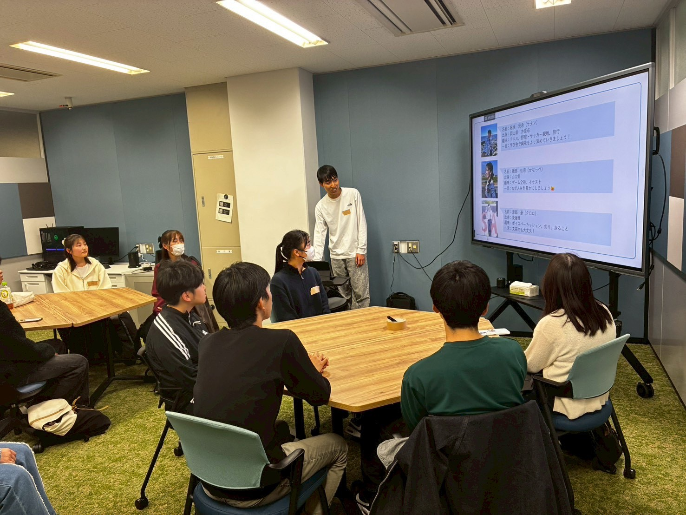
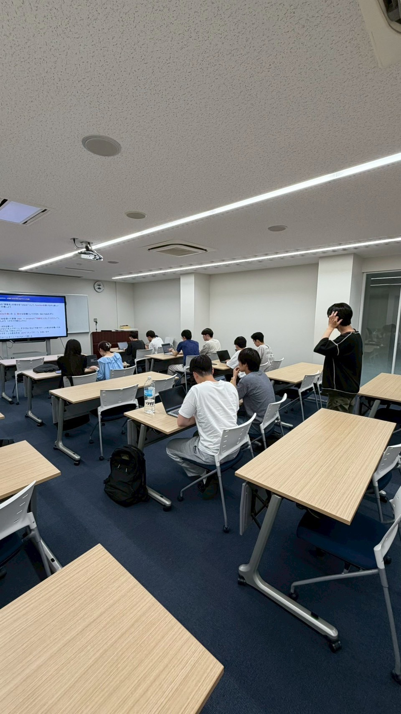
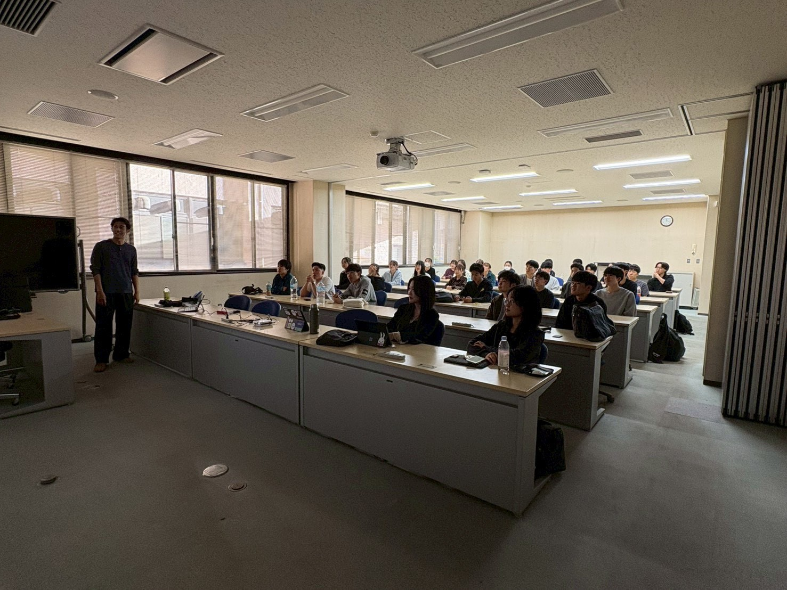
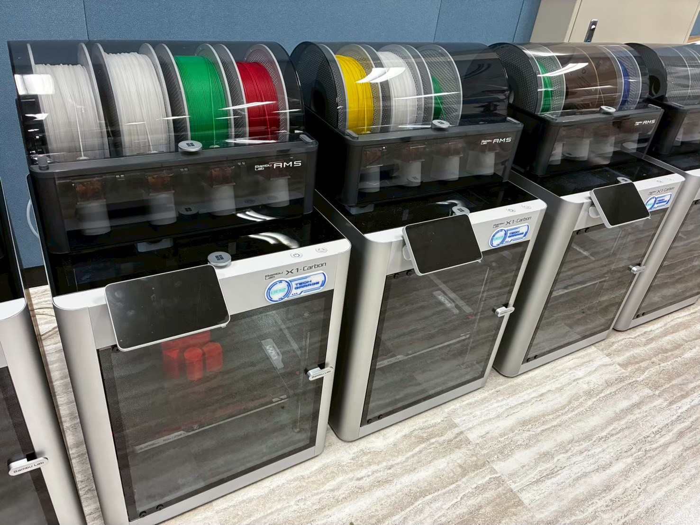
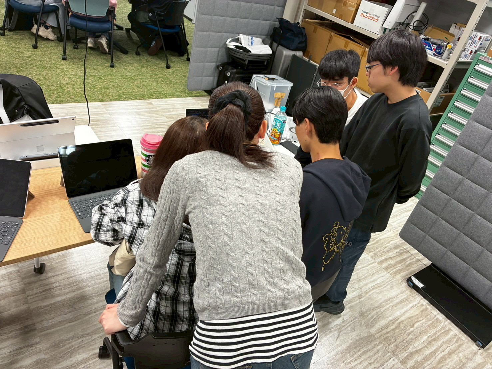
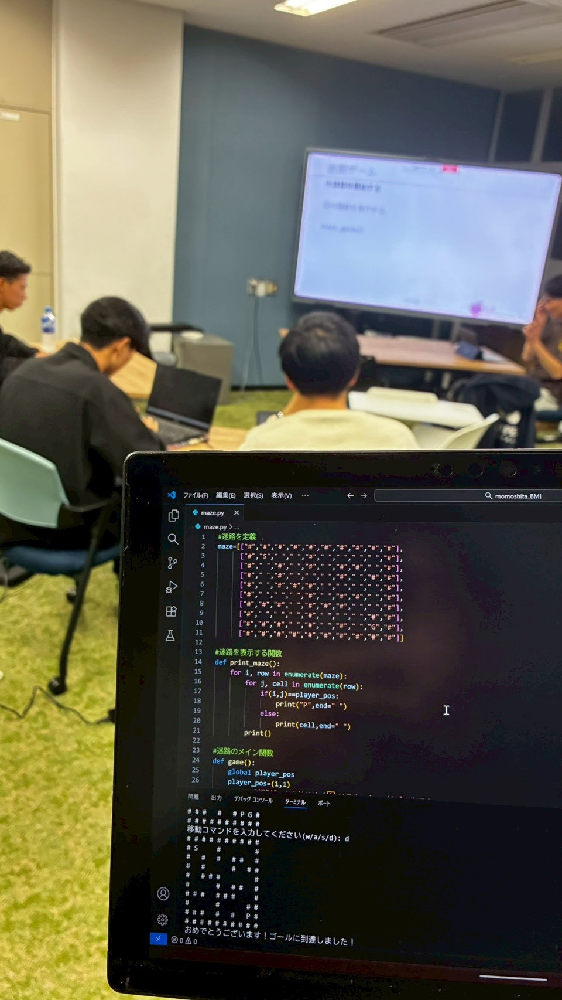
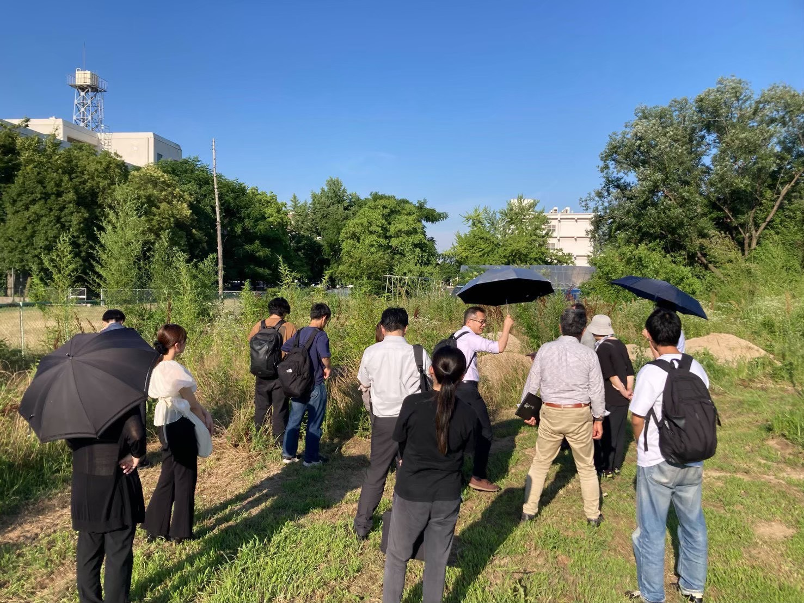
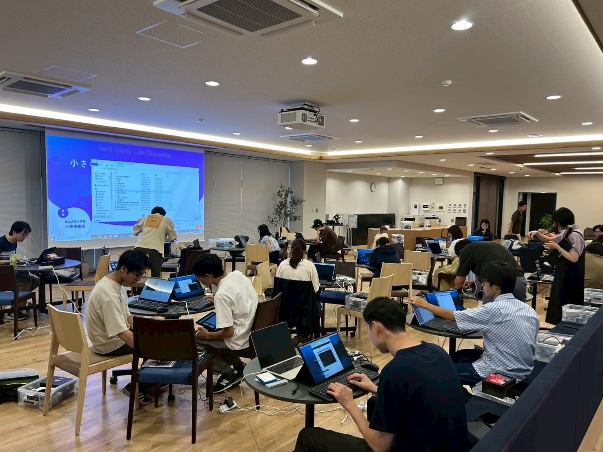
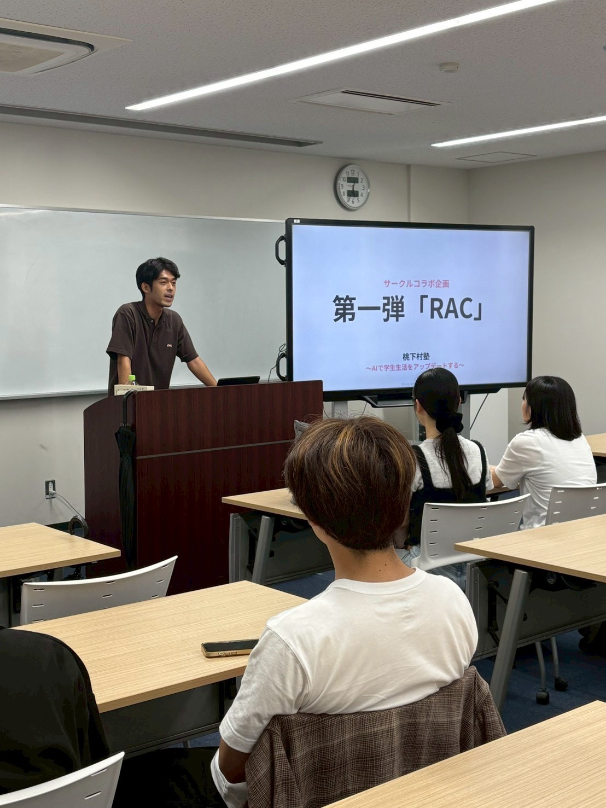
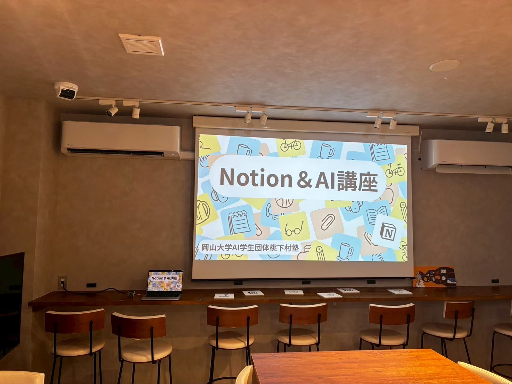

行動第一主義
まずやってみる。動いた者勝ち。
考えるだけでは現実は変わらない。完璧な計画を待つよりも、まず小さく動き、試し、そこから学ぶ。行動することで初めて、課題の本質や自分たちの不足が見えてくる。
桃下村塾は、岡山から社会を変革するリーダーを輩出することを目指す、実践型の学びの場である。
単なるサークル活動や勉強会ではなく、学生が社会に出る前から、自ら課題を見つけ、仲間と協力し、AIやビジネスの力を使って価値を生み出す経験を積むための組織である。
AIの発展によって、情報収集や資料作成、アイデア出し、分析などの多くの作業は、誰でも一定水準まで実行できるようになった。その一方で、本当に重要になるのは、何を問いとして立てるか、誰のどの課題に向き合うか、どのように仲間を巻き込み、実行まで持っていくかである。
ここで育てたいのは、単にAIを使える人材でも、ビジネスを知識として理解している人材でもない。AIやITを手段として使いこなし、人と社会をつなぎ、地域や組織に新しい価値を生み出せる人材である。

仲間と学び合い、価値をつくる「社会で活躍するための力を、身につけられる場所をつくりたい」
大学には、専門知識を学ぶ授業や研究の場がある。一方で、社会に出てから求められる力は、専門知識だけではない。自分で課題を見つける力、周囲を巻き込む力、企画を立てる力、実行する力、失敗を振り返る力、技術を社会の価値につなげる力が必要になる。しかし、こうした力を体系的に、かつ実践的に身につけられる場は限られている。
そこで桃下村塾は、AIとビジネスを軸に、学生が実社会に近い形で挑戦できる場として構想された。AIはこれからの社会においてあらゆる分野に関わる基盤技術であり、ビジネスは社会の課題を価値に変え、持続的に届けるための考え方である。この2つを学ぶことで、学生は単なる知識の習得にとどまらず、社会に対して具体的な提案や行動ができるようになる。
桃下村塾という名前には、吉田松陰の松下村塾のように、地域から志ある若者が集まり、互いに学び合い、社会を変える人材へと成長していく場にしたいという想いが込められている。歴史上の松下村塾をそのまま再現するのではなく、その本質を、現代の岡山に置き換えた実践共同体である。
AIやビジネスを学ぶことそのものではなく、それらを手段として使い、社会に価値を生み出せるリーダーを育てる。組織のトップに立つ人だけがリーダーではない。自分のいる場所で課題を見つけ、周囲を巻き込み、行動を起こせる人。小さなプロジェクトでも、地域の課題でも、自ら一歩踏み出し、状況を前に進められる人を、桃下村塾ではリーダーと捉える。
岡山という地域を拠点にしながら、学生が企業、地域、行政、教育機関、投資家などとつながり、実際の課題に挑戦する。その過程で生まれたアイデアやプロジェクトが、地域の活性化、新しい事業、若者の成長機会につながっていく。最終的には、「岡山で挑戦するならここ」と言われる、地域の若者の挑戦拠点を目指す。
まずやってみる。動いた者勝ち。
考えるだけでは現実は変わらない。完璧な計画を待つよりも、まず小さく動き、試し、そこから学ぶ。行動することで初めて、課題の本質や自分たちの不足が見えてくる。
立場ではなく、姿勢で尊敬し合う。
学年、経験、スキル、役職に関係なく、互いに学び合う姿勢を大切にする。知識がある人が一方的に教える場ではなく、それぞれが経験や考えを持ち寄り、互いに刺激し合う場である。
理系・文系・初心者・上級者、どんな背景も力になる。
社会の課題は、ひとつの専門性だけでは解決できない。多様な人が集まることで、新しい価値が生まれる。違いを欠点ではなく、組織の強みとして捉える。
失敗や迷いも含めて語り合える場をつくる。
大切なのは、失敗しないことではなく、失敗から何を学び、次にどう活かすかである。迷いや不安も含めて話せる環境があるからこそ、メンバーは安心して挑戦できる。
AIやITは「人をつなぐ」手段として使う。
AIやITは目的ではない。人と人、人と地域、人と機会をつなぐための手段である。技術をただ学ぶのではなく、誰のために、何のために使うのかを常に問い続ける。

AIとビジネスについて、手を動かしながら学ぶ場。「知る」で終わらず、「使える」「動かせる」状態を目指す。プログラミングが初めての人でも、安心して参加できる雰囲気を大切にしている。

メンバー全員が集まり、活動の方向性や個々のプロジェクトを共有する場。学年や立場を越えて議論し、次の一歩を一緒に描いていく。

外部講師を招いた勉強会、企業との共同企画、地域課題への取り組みなど、テーマに応じた企画を随時実施。学生だけでは得られない視点や経験を獲得する。



Cooperative Project
地域社会や企業と連携した共創型プロジェクト。学生が課題発見から実装まで一気通貫で担当する。

テクノロジー実装研究会
AIやITを「使う」だけでなく「実装する」ことに重きを置いた技術研究の場。

Circle Collaboration
他の学生団体・サークルとの合同企画やイベント開催。専門性を越えた交流から新しい価値をつくる。
Class for High School Students
岡山県内の高校でAIやビジネスをテーマにした出張授業を実施。次世代の挑戦の入口をつくる。

External Events
学外イベント・カンファレンスへの登壇や出展を通じて、団体の活動と岡山の挑戦を発信。
2026年、700人規模のホールイベントを岡山で開催する。
AIとビジネス、そして地域の交差点に立ち、学生・社会人・企業・地域がフラットに交わる場をつくる。桃下村塾が、岡山という土地から生まれる新しい挑戦の象徴となるように。
ご見学、ご取材、協賛・コラボレーションのご相談など、お気軽にお問い合わせください。